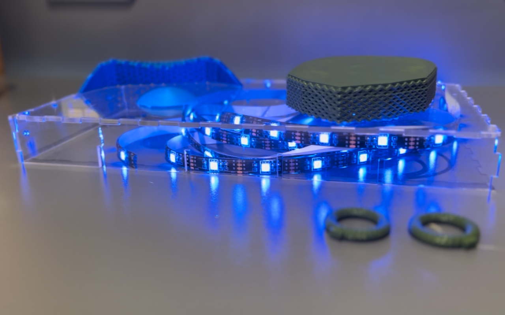

The Delegated Self:
Speculating on AI Agents, Digital Identity & Financial Agency

The provocation
After spending a chunk of my career building financial products, I started to wonder what the next decade of finance might look like. The rise of decentralised finance, the emergence of autonomous AI agents, and the increasing integration of blockchain technology have created a new paradigm for financial systems. This paradigm challenges traditional notions of trust, accountability, and human oversight, raising critical questions about the ethical and societal implications of these technologies.
This research starts from a single scenario: receiving a rejection letter not from a bank, but from a protocol. No human reviewed it and no appeal exists.
Research questions
- How do people respond emotionally to identity-gated financial systems, and what trust and accountability would they require?
- Where do people draw the line on delegating financial agency to autonomous AI?
- Can speculative artifacts work as research instruments for surfacing these ethics, and what design principles follow?
The study doesn't build financial technology. It builds the experiential surface of a possible future, and asks real people to inhabit it.
This research uses speculative and critical design (Dunne & Raby, 2013) as research-through-design: building artifacts that make a possible future tangible, then placing participants inside it to see what they trust, fear, and would refuse.
Dawn Exhibition - Department of Computer Science & Information Systems


The fictional film & interactive installation
A woman stops breathing for twenty seconds in her sleep. Her vitals dip below threshold. A health record syncs, a confidence score reads 53%, and a system decides she is dead. By morning her subscriptions are cancelled, her contacts notified, a casket paid for to specification. She wakes, taps her card, rests her palm on the pad. The system confirms her at 99.9%, but nothing changes.
The Delegated Self speculates on the convergence of AI Agents, Digital Identity and Financial Agency. It takes a live development; biometric identity now gating AI agents with spending authority; and builds it out into a near-future product where you carry a record you cannot edit and hand your money and different aspects of your life to something called a Custodian.
It exists as two things you can be inside of. A booth with 3D printed components, electronics and a scanner, that asks for your document, then your body, then how much you're willing to delegate, and gives you 10 seconds to stop what happens next. And a film in which a system was told a woman was alive and had already decided otherwise. Whether your ten seconds mean anything was settled before you walked in, the booth will not tell you which.